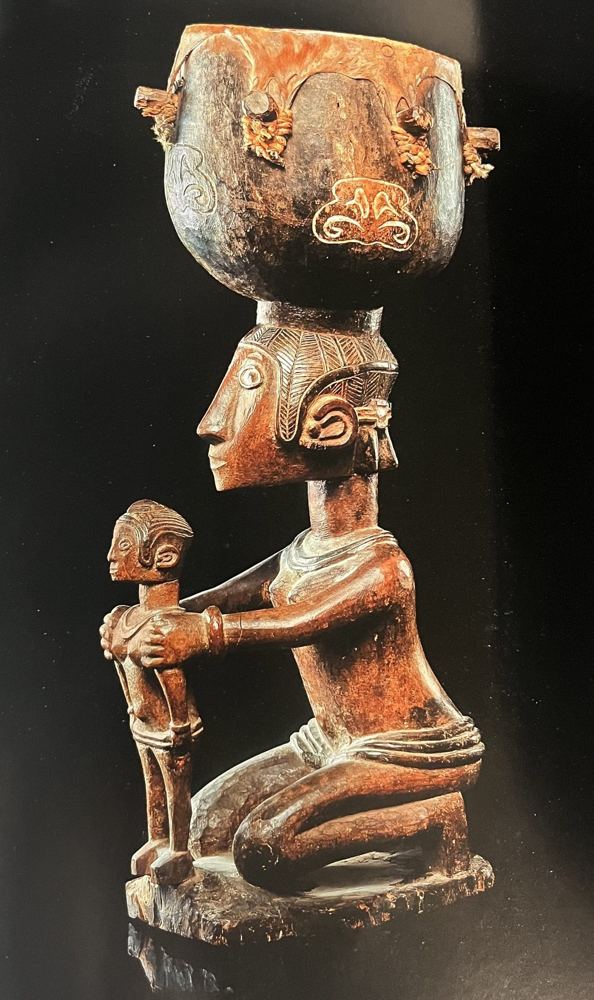

La Guinée-Conakry possède un patrimoine culturel exceptionnel, façonné par la diversité de ses peuples : Peuls, Malinkés, Soussous et Forestiers. Sa musique est mondialement reconnue grâce aux griots, gardiens de l'histoire orale, et aux instruments emblématiques comme le djembé, la kora et le balafon, dont le célèbre Sosso-Bala est classé à l'UNESCO. Les danses traditionnelles, portées à l'international par les mythiques Ballets Africains, incarnent toute la vitalité du pays. L'artisanat se distingue par le tissage de textiles renommés comme le lépi indigo du Fouta-Djalon, ainsi que par les masques sacrés de Guinée forestière. Sa gastronomie conviviale met à l'honneur des plats savoureux tels que le riz gras et les sauces aux feuilles de manioc ou d'arachide, témoignant d'un héritage vivant et chaleureux.
